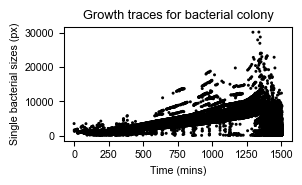
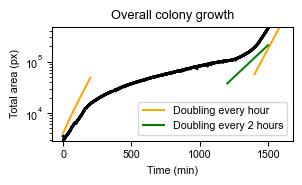

import numpy as np
import matplotlib.pyplot as plt
import tifffile as tiff
import skimage as sk
from skimage.util import invert
from scipy import ndimageWorkshop Python Image Analysis
Martijn Wehrens, May 2026
Answers to exercises 05
Bacterial filamentation data
To do this, we can make use of the functions provided in the building block page.
As an example solution, we created bacterial_seg_pipe.py, which loops over the frames in the tiff file:
"""
Bacterial segmentation pipeline, which uses the functions defined in
`bacterial_seg_functions.py` to segment each frame in time-lapse tiff file,
and store resulting segmentation masks as npz files in output folder.
"""
################################################################################
# %% Import libraries
import sys, os
import yaml
import time, datetime
from pathlib import Path
import matplotlib.pyplot as plt
from skimage.util import invert
import seaborn as sns
import tifffile as tiff
import numpy as np
################################################################################
# %% Custom imports
from . import bacterial_seg_functions as sf
################################################################################
# %% Plotting function
def plot_sidebyside(img_inv_crop, segmask_oneframe, frame_idx):
# set font to arial 8
plt.rcParams['font.family'] = 'Arial'
plt.rcParams['font.size'] = 8
# create figure
fig, axs = plt.subplots(1, 2, figsize=(10/2.54, 5/2.54))
axs[0].imshow(img_inv_crop, cmap='gray')
axs[0].set_title(f"Frame {frame_idx}")
axs[1].imshow(segmask_oneframe, cmap=sf.cmap_random(200))
axs[1].set_title(f"Segmentation")
return fig
################################################################################
# %% Function to run the whole pipeline
def run_seg_pipeline(config, make_plots = True):
"""
Runs the whole pipeline.
Config is a dict with the following parameters:
- path_input: path to the input time lapse tiff file (frame * x * y)
- path_output: path to the output folder
- frame_range: tuple with the range of frames to process (start, end)
- disksize_range: disk radius for global mask, should be >radius bacteria (e.g. 20)
- sigma_smooth: smoothing sigma for the LoG (set e.g. to 3)
- disksize_crossing: disk radius for neighborhood that defines zero-crossing (e.g. 1)
- min_distance: minimum distance for local peak finder to identify bacteria,
set to <bacterial radius (e.g. 5)
- sigma_seed: gaussian blur applied to distance mask of preliminary mask to
identify unique bacteria (e.g. 3)
- distance_threshold: pixels with distance-to-background values >distance_threshold
are kept to identify individual bacteria. Should be <expected minimum width
of bacteria. (E.g. 3)
Example:
config = {
"path_input": "/path/to/input/folder",
"path_output": "/path/to/output/folder",
"filename_data": "input.tiff",
"frame_range": (0, 100),
"disksize_range": 20,
"sigma_smooth": 3,
"disksize_crossing": 1,
"min_distance": 5,
"sigma_seed": 3,
"distance_threshold": 3
}
"""
# set up output folder (take name of input subfolder as identifier)
basename = Path(config['filename_data']).stem
output_subfolder = os.path.join(config['path_output'], basename)
# create output sub folders
os.makedirs(os.path.join(output_subfolder, "seg"), exist_ok=True)
os.makedirs(os.path.join(output_subfolder, "plots"), exist_ok=True)
# Write a log file to the output folder
config['scriptname'] = os.path.basename(__file__) # Add this script's name
yaml.dump(config, open(os.path.join(output_subfolder, 'config_dump.yaml'), 'w'))
# Load data
imgs_ecoli = tiff.imread(os.path.join(config['path_input'],config['filename_data']))
# loop over frames
total_time = 0
frames_to_process = range(config['frame_range'][0], config['frame_range'][1])
for idx, frame_idx in enumerate(frames_to_process):
# frame_idx = 254
# update for user
print(f"Processing frame {frame_idx}")
# (gimmick) get current time
current_time = time.time()
# skip if input image is empty
if len(np.unique(imgs_ecoli[frame_idx,:,:].ravel())) < 2:
print("SKIPPING, INPUT IMAGE SEEMS TO BE EMPTY.")
continue
# now segment a frame
segmask_oneframe, img_inv_crop = sf.seg_bacterium(
input_img = invert(imgs_ecoli[frame_idx,:,:]),
sigma_smooth=config['sigma_smooth'],
disksize_crossing=config['disksize_crossing'],
disksize_range=config['disksize_range'],
min_distance=config['min_distance'],
sigma_seed=config['sigma_seed'],
distance_threshold=config['distance_threshold']
)
# create a side-by-side plot if make_plots == True
if make_plots:
fig = plot_sidebyside(img_inv_crop, segmask_oneframe, frame_idx)
fig.savefig(
os.path.join(
output_subfolder, "plots/",
f"png_segmentation_frame{frame_idx:04d}.png"
),
dpi=600
)
plt.close(fig)
# save the segmentation to npz in appropriate output subfolder
output_path = os.path.join(
output_subfolder, 'seg/',
f"segmentation_frame_{frame_idx:04d}.npz"
)
np.savez(
output_path,
segmask=segmask_oneframe,
img_inv_crop=img_inv_crop
)
# (gimmick) update user about expected time remaining
time_delta = time.time() - current_time
total_time += time_delta
remaining_time = (total_time/(idx+1))*(len(frames_to_process)-idx-1)
remaining_time_str = datetime.timedelta(seconds=int(remaining_time))
print(f"Time for this frame: {datetime.timedelta(seconds=time_delta)}.\nEstimated time remaining: {remaining_time_str}.")
# %%A second script allows to create a dataframe out of that data:
"""
Read seg files from a specific location and plot their sizes, assuming the
filename ends with frame number, and has format <name>_0000.npz.
"""
# %%
import glob
import numpy as np
import os
import pandas as pd
import seaborn as sns
################################################################################
# %% Helper functions
def load_segmask(filepath):
"""Load a segmentation mask"""
data = np.load(filepath)
return data["segmask"]
# get bacterial sizes
def calculate_sizes(segmask):
"""return sizes of labeled objects"""
return np.bincount(segmask.flatten())[1:] # skip background (0)
################################################################################
# %% Plotting function
def get_bacterial_sizes(current_folder):
"""Go over segmentation masks stored in a folder, and calculate
bacterial sizes. Segmentation masks should be labeled. Files
in the folder should end with frame number, and have format <name>_0000.npz.
Args:
current_folder: path to folder with segmentation masks
"""
# current_folder = "/Users/m.wehrens/Data_notbacked/2025_Py-Image-workshop_OUTPUT-examples/Filamentation/pos3crop_timelapse_switch890"
# get all files
file_list = glob.glob(current_folder + "/*.npz")
# get all frame numbers
frame_numbers = [int(filename.split("/")[-1].split(".")[0].split("_")[-1]) for filename in file_list]
frame_max = max(frame_numbers)
frames_sorted = np.sort(frame_numbers)
# get file base name
file_basename = "_".join(file_list[0].split("/")[-1].split(".")[0].split("_")[:-1])
# set up dataframe
df_sizes = pd.DataFrame(columns=["frame", "size"])
# load file
for frame_idx in frames_sorted:
# frame_idx = 0
filepath_segfile = os.path.join(
current_folder, f"{file_basename}_{frame_idx:04d}.npz"
)
# load segfile & calculate sizes
segmask = load_segmask(filepath_segfile)
current_sizes = calculate_sizes(segmask)
# add this info to dataframe
df_sizes = pd.concat(
[df_sizes, pd.DataFrame({"frame": frame_idx, "size": current_sizes})],
ignore_index=True
)
# and now make scatter plot using seaborn
axs = sns.scatterplot(data=df_sizes, x="frame", y="size")
axs.set_title("Growth traces for bacterial colony")
axs.set_xlabel("Frame number")
axs.set_ylabel("Single bacterial sizes (px)")
# and save
fig = axs.get_figure()
fig.savefig(os.path.join(current_folder, "bacterial_sizes_over_time.png"), dpi=300So now you can execute a segmentation pipeline as follows.
First, analyze the data:
import Bioimage_analysis_05_answers_bacteria.bacterial_seg_pipe as sp
import Bioimage_analysis_05_answers_bacteria.bacterial_len_plot as lp
# set up the config
DATA_FOLDER = "/Users/m.wehrens/Data_notbacked/2025_Py-Image-workshop_Filamentation-example-data/"
FILENAME_DATA = "pos3crop_timelapse_switch890.98.tif"
config = {
"path_input": DATA_FOLDER + "rawdata/",
"path_output": DATA_FOLDER + "analysis/",
"filename_data": FILENAME_DATA,
"frame_range": (0, 3),
"disksize_range": 20,
"sigma_smooth": 3,
"disksize_crossing": 1,
"min_distance": 5,
"sigma_seed": 3,
"distance_threshold": 3
}
# run the pipeline
sp.run_seg_pipeline(config, make_plots = True)
# get the data
FOLDER_SEGMASKS = DATA_FOLDER + "/analysis/pos3crop_timelapse_switch890.98/seg"
df_sizes = lp.get_bacterial_sizes(FOLDER_SEGMASKS)Processing frame 0
Time for this frame: 0:00:03.135181.
Estimated time remaining: 0:00:06.
Processing frame 1
Time for this frame: 0:00:03.327653.
Estimated time remaining: 0:00:03.
Processing frame 2
Time for this frame: 0:00:03.306375.
Estimated time remaining: 0:00:00.
Technical note
The frame range is limited to (0, 3) to keep the processing time of rendering this web site low, but more data is available as the script was run with a range of (0, 1050), and the resulting data stored.
We’re now ready to make some plots. For example a scatter plot of bacterial sizes observed over time:
import seaborn as sns
delta_t = 86 # interval between frames (approximately)
df_sizes['time'] = df_sizes['frame'] * delta_t/60 # convert frames to minutes
df_sizes['size_um2'] = df_sizes['size'] * 0.041**2
# set global plotting parameters, face arial, size 8
plt.rcParams['font.family'] = 'Arial'
plt.rcParams['font.size'] = 8
# Plot the data
axs = sns.scatterplot(data=df_sizes, x="time", y="size",
color="black", edgecolor="none", s=5)
axs.set_title("Growth traces for bacterial colony")
axs.set_xlabel("Time (mins)")
axs.set_ylabel("Single bacterial sizes (px)")
# and save + close
fig = axs.get_figure()
fig.set_size_inches(8.1/2.54, 5/2.54) # typical figure = 17.2cm wide
plt.tight_layout()
fig.savefig(DATA_FOLDER + "analysis/" + "bacterial_sizes_over_time.pdf", dpi=300)
plt.show(fig) # for display on workshop website
plt.close(fig)
Or, we can plot the growth rate of the total colony over time:
# Get total area of the colony over time
df_sizes_aggregated = df_sizes.groupby(by = ['frame','time'],)['size'].sum().reset_index()
# And plot in log-space
axs = sns.scatterplot(data=df_sizes_aggregated, x="time", y="size",
color="black", edgecolor="none", s=5)
axs.set_yscale('log')
# Include doubling rate functions
time_range = np.arange(0,200)
axs.plot(time_range, -1000+5000*2**((time_range)/60), label="Doubling every hour", color='orange')
time_range = np.arange(1400,1600)
axs.plot(time_range, 100*2**((time_range-850)/60), color='orange')
time_range = np.arange(1200,1500)
axs.plot(time_range, 5000*2**((time_range-850)/120), label="Doubling every 2 hours", color='green')
# Legend
axs.legend(loc="lower right")
# Axes limits
axs.set_ylim([np.min(df_sizes_aggregated["size"]), np.max(df_sizes_aggregated["size"])])
# Labels
axs.set_ylabel("Total area (px)")
axs.set_xlabel("Time (min)")
# Title
axs.set_title("Overall colony growth")
# And save
fig = axs.get_figure()
fig.set_size_inches(8.1/2.54, 5/2.54)
plt.tight_layout()
fig.savefig(DATA_FOLDER + "analysis/" + "total_colony_size_over_time.pdf", dpi=300)
plt.show(fig) # for display on workshop website
plt.close(fig)
We can now nicely see what happened during the experiment. First, the bacteria were growing relatively fast (doubling ± every hour). Then, antibiotics were added, and growth is substantially slower. Finally, antibiotics are removed, and bacterial growth recovers.
In the previous plot, we can also see the size increase bacteria undergo during antibiotic stress (which was also observed in the original paper).
Note that a more advanced analysis is required to investigate properly what is happening in these experiments. To investigate growth traces of single bacteria, tracking which label corresponds to an individual bacterium over time is required. In addition, the segmentation needs to be of a much higher quality. This could be done by employing manual corrections, or perhaps machine learning techniques could improve segmentation.
KTR data set
As an example, for the KTR dataset, we chose to write scripts in a way such that they can be called directly from the command line.
Script that analyzes the data and creates a csv with data:
""" Analyze KTR data to get C/N ratios
Segments nuclei in KTR data, generates cytoplasmic ROIs,
calculates C/N ratios, and saves the data in a csv file.
Exports a csv file with columns "frame", "KTR_ratio", "int_nucleus", "int_cytoplasm",
where KTR_ratio is the C/N ratio of average cytoplasmic intensity (C) and
average nuclear intensity (N).
Example of how to call script:
python KTR_pipe.py /path/to/Composite_KTR.tif 0 2
With:
- Argument 1: path to the raw KTR data (tif file)
- Argument 2: channel number for nuclear marker (counting starts at 0)
- Argument 3: channel number for KTR sensor (counting starts at 0)
"""
################################################################################
# %% Import libraries
import sys, os
import yaml
import time, datetime
from pathlib import Path
import matplotlib.pyplot as plt
from matplotlib.colors import ListedColormap
import seaborn as sns
import tifffile as tiff
import numpy as np
import pandas as pd
import skimage as sk
from skimage.util import invert
from scipy import stats
from scipy import ndimage
from skimage.measure import label, regionprops
from skimage.feature import peak_local_max
from skimage.morphology import dilation, disk
################################################################################
# %% helper functions for segmentation and analysis
def cmap_random(N):
""" generate a cmap with random colors (first one black) """
cmap = np.zeros((N+1, 3))
for i in range(1, N+1):
cmap[i] = np.random.rand(3)*0.7 + 0.3
return ListedColormap(cmap)
def seg_nuclei(input_img):
"""
Segment nuclei in an image using triangle thresholding.
"""
# Apply triangle threshold method
thresh = sk.filters.threshold_triangle(input_img)
mask = input_img > thresh
# Remove small objects and label
mask_filtered = sk.morphology.remove_small_objects(mask, min_size=50)
result = sk.measure.label(mask_filtered)
return result
def separate_nuclei(seg_mask, split_distance=5, showplot=False):
"""
Apply watershed function, based on distance transform.
See also https://scikit-image.org/docs/0.25.x/auto_examples/segmentation/plot_watershed.html
"""
# distance transform
mask_distance = ndimage.distance_transform_edt(seg_mask)
# blur distance transform to remove noise
mask_distance_blurred = sk.filters.gaussian(mask_distance, sigma=split_distance/2)
# find the seeds using local maxima
local_minima = peak_local_max(mask_distance_blurred,
footprint=disk(split_distance),
exclude_border=False)
mask_seeds = np.zeros_like(mask_distance, dtype=int)
mask_seeds[local_minima[:,0], local_minima[:,1]] = 1
mask_seeds = label(mask_seeds)
if showplot:
plt.figure()
plt.imshow(mask_distance_blurred)
plt.contour(seg_mask>0, levels=[0.5], colors="r")
for x,y in local_minima:
plt.plot(y,x, "ro")
plt.show()
# perform watershed
mask_final = sk.segmentation.watershed(image=-seg_mask,
markers=mask_seeds,
mask=seg_mask>0)
if showplot:
plt.figure()
plt.imshow(mask_final, cmap=cmap_random(200))
plt.show()
return mask_final
def get_rings(seg_mask, width=2):
""" Based on a mask, get areas exactly adjacent to the masks (aka 'rings')
These areas should correspond to cytoplasm. """
# dilate to get expanded area
mask_rings = dilation(seg_mask, disk(width))
# then remove original to get rings
mask_rings[seg_mask>0] = 0
return mask_rings
def get_rings_margin(seg_mask, width=2, margin=1):
""" Based on mask, get areas directly adjacent to the masks after margin
These areas should correspond to cytoplasm.
"""
# dilate to get expanded area (plus margin)
mask_rings = dilation(seg_mask, disk(width+margin))
# remove original + margin to get ring around nucleus, with margin
mask_rings[dilation(seg_mask, disk(margin))>0] = 0
return mask_rings
# A background correction is requested in a later exercise.
# "correct_bg()" is an example solution.
def correct_bg(img, export_path=None):
"""
Apply background correction to image.
Works by determining the mode, and subtracting it.
Resulting negative values are set to zero.
If export_path is given, export picture.
"""
# img = img_KTR; export_path = "/Users/m.wehrens/Desktop/test.png"
# determine background level and mask
the_mode = np.bincount(img.ravel()).argmax()
mask_bg = img<the_mode
# subtract it
img_corr = img - the_mode
# set would-be negative values to 0
img_corr[mask_bg] = 0
if export_path is not None:
fig, axs = plt.subplots(1,3, figsize=(15/2.54,5/2.54))
plt.rcParams.update({"font.family": "Arial", "font.size": 7})
# Show image, and image with identified background pixels
axs[0].imshow(img)
axs[1].imshow(img)
axs[1].imshow(mask_bg, alpha=mask_bg*1.0)
# show it in the histogram
axs[2].hist(img.ravel(), bins=32, color='grey')
axs[2].axvline(the_mode, color='red')
axs[2].set_xlabel("Intensity")
axs[2].set_ylabel("Counts")
plt.tight_layout()
fig.savefig(export_path, dpi=600)
plt.close()
return img_corr
def get_mean_intensity(img, mask):
"""Calculate means in areas corresponding to labeled mask in image img."""
# Calculate totals per index
sums = np.bincount(mask.ravel(), weights=img.ravel())
# Calculate pixel coverage per index
counts = np.bincount(mask.ravel())
# Calculate the means
return (sums/counts)[1:]
################################################################################
# %% Code executed when script is called
if __name__ == "__main__":
# Input arguments
img_path_KTR = sys.argv[1]
channel_nuc = int(sys.argv[2])
channel_ktr = int(sys.argv[3])
# Set up an output directory named "analysis" in the parent directory
# (This assumes the raw data is stored in its own subdirectory in sample folder)
# e.g.
# ../../projectX/data/sampleXYZ_202606/raw/
# ../../projectX/data/sampleXYZ_202606/analysis/
output_dir = Path(os.path.dirname(img_path_KTR)).parent / "analysis"
os.makedirs(output_dir, exist_ok=True)
path_bg_fig = os.path.join(output_dir, f"background_correction_{channel_ktr}.png")
# Load data
# img_path_KTR = '/Users/m.wehrens/Data_notbacked/2025_Py-Image-workshop_KTR-example-data/raw/Composite_KTR.tif'
# channel_nuc = 0; channel_ktr = 2
KTR_data = tiff.imread(img_path_KTR)
# Initialize empty list to store dataframes
df_KTR_list = [None]*KTR_data.shape[0]
# Loop over the frames
for fr_idx in range(0, KTR_data.shape[0]):
# fr_idx=0
print(f"Working on frame {fr_idx} / {KTR_data.shape[0]}")
# get nuclei and KTR intensity images
img_nuc = KTR_data[fr_idx, channel_nuc, :, :]
img_KTR = KTR_data[fr_idx, channel_ktr, :, :]
# plt.imshow(img_nuc)
# plt.imshow(img_KTR)
# correct the background (requested in later exercise)
if fr_idx == 0:
# if first frame, also export image to check whether
# background correction was appropriate
img_KTR = correct_bg(img_KTR, export_path=path_bg_fig)
else:
img_KTR = correct_bg(img_KTR)
# Calculate the mask
mask_nuclei = seg_nuclei(img_nuc)
mask_nuclei_split = separate_nuclei(mask_nuclei, split_distance=5)
# Calculate averages
KTR_means_nucl = get_mean_intensity(img_KTR, mask_nuclei_split)
KTR_means_cyto = get_mean_intensity(img_KTR, get_rings_margin(mask_nuclei_split))
# plt.imshow(get_rings(mask_nuclei_split), cmap=cmap_random(200))
# CM = cmap_random(200); plt.imshow(mask_nuclei_split, cmap=CM); plt.imshow(get_rings_margin(mask_nuclei_split), cmap=CM, alpha=(get_rings_margin(mask_nuclei_split)>1)*1.0)
# Get ratio
KTR_ratios = KTR_means_cyto/KTR_means_nucl
# Store the data
df_KTR_list[fr_idx] = pd.DataFrame({
"frame": fr_idx,
"KTR_ratio": KTR_ratios,
"int_nucleus": KTR_means_nucl,
"int_cytoplasm": KTR_means_cyto
})
# Now merge the dataframes
df_KTR = pd.concat(df_KTR_list, ignore_index=True)
# Save data to csv
output_path = os.path.join(output_dir, f"KTR_ratios_ch{channel_ktr}.csv")
df_KTR.to_csv(output_path, index=False)
print(f"Data saved to {output_path}")
# %%
if __name__ == "main":
"""
python KTR_pipe.py /Users/m.wehrens/Data_notbacked/2025_Py-Image-workshop_KTR-example-data/raw/Composite_KTR.tif 0 2
"""Creating a plot based on the csv:
"""Creates plot of ratios from csv file
Example usage:
python KTR_plot.py /path/to/KTR_ratios_ch1.csv 25
With:
- First argument: path to the csv file created by KTR_pipe.py
- Optional second argument: time of stimulation in minutes (plotted as vertical line)
"""
################################################################################
# %% Import libraries
import sys, os
from pathlib import Path
import pandas as pd
import seaborn as sns
import matplotlib.pyplot as plt
################################################################################
# %% plotting function
def plot_data(DATA_PATH, stim_time = None):
# Get relevant path information
OUTPUT_DIR = Path(DATA_PATH).parent
FILENAME = Path(DATA_PATH).stem
# Read the data
df_KTR = pd.read_csv(DATA_PATH)
# add time field
# From the image metadata: Frame interval: 270.01617 sec
df_KTR['time_s'] = 270.01617 * df_KTR['frame'] / 60
# Now plot the data
plt.rcParams["font.family"] = "Arial"
plt.rcParams["font.size"] = 8
fig, axs = plt.subplots(1,1, figsize=(5/2.54,5/2.54))
sns.scatterplot(df_KTR, x="time_s", y="KTR_ratio", ax=axs,
color="k", alpha=0.05, s=5, edgecolor=None)
sns.lineplot(df_KTR, x="time_s", y="KTR_ratio", estimator="mean", color="r", ax=axs)
if stim_time is not None:
axs.axvline(stim_time, color="b", ls="--")
axs.set_xlabel("Time (min)")
axs.set_ylabel("Sensor C/N ratio")
axs.set_ylim(0, 1.5)
plt.tight_layout()
# save to same directory
output_path_fig = os.path.join(OUTPUT_DIR, f"{FILENAME}_overtime.png")
fig.savefig(output_path_fig, dpi=600)
plt.close(fig)
################################################################################
# %% Code that gets executed when script is called
if __name__ == "__main__":
# DATA_PATH = "/Users/m.wehrens/Data_notbacked/2025_Py-Image-workshop_KTR-example-data/analysis/KTR_ratios_ch1.csv"
# STIM_TIME = 25
# Read input arguments
DATA_PATH = sys.argv[1]
if len(sys.argv) > 2:
STIM_TIME = int(sys.argv[2])
# Make plot
plot_data(DATA_PATH, stim_time=STIM_TIME)
# python KTR_plot.py /Users/m.wehrens/Data_notbacked/2025_Py-Image-workshop_KTR-example-data/analysis/KTR_ratios_ch2.csv 25These scripts can be called from the command line. Navigate to the directory with the scripts and call:
# To perform the analysis:
python KTR_pipe.py /path/to/Composite_KTR.tif 0 2
# To create the plot:
python KTR_plot.py /path/to/KTR_ratios_ch1.csv 25